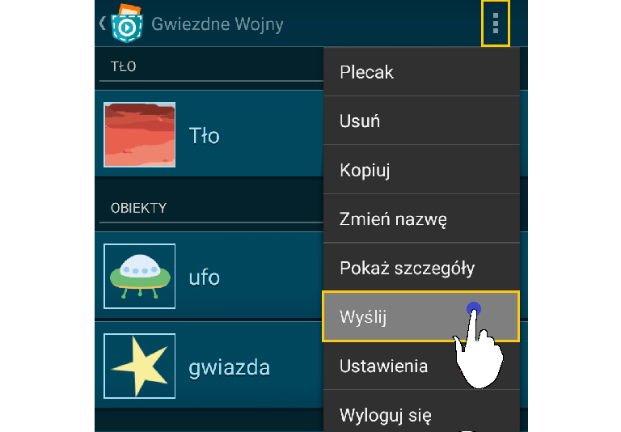
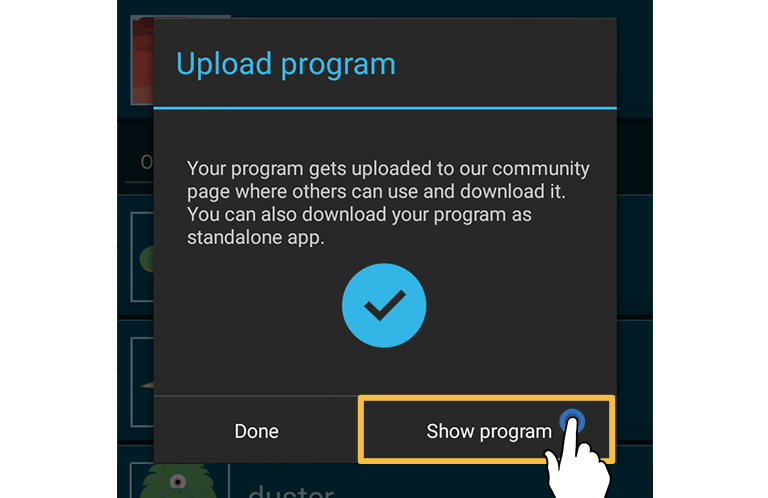

Jak wziąć udział?
Zdecyduj, czy chcesz pracować samodzielnie czy w zespole. Jeśli chcesz wziąć udział wraz z kolegami, prosimy o poinformowanie swojego nauczyciela. Prześledź "pierwsze kroki i reguły" i rozpocznij tworzenie projektu Pocket Code.
Jak się nauczyć kodowania?
Jeśli nie masz żadnego doświadczenia w programowaniu, nie bój się, to jest łatwiejsze niż myślisz! Przycisk "Pomoc" w aplikacji Pocket Code prowadzi do samouczka, w którym pokazujemy kilka świetnych przykładów dla początkujących. Ponadto istnieje duża społeczność Pocket Code, która oferuje w Internecie ogromny zestaw istniejących programów, które mogą służyć jako inspiracja. Można je znaleźć, klikając przycisk "Przeglądaj" w aplikacji Pocket Code.
Znajdź odpowiednie materiały do programu
Aby Ci to ułatwić, mamy specjalne zasoby multimedialne, które możesz wykorzystać podczas tworzenia gry. Przeczytaj FAQ (najczęściej zadawane pytania), aby uzyskać więcej informacji o Bibliotece multimediów.
Pierwsze kroki i zasady
Jeśli pracujesz w zespole, proszę wybrać nazwę drużyny. Jeśli chcecie wziąć udział jako cała klasa, prosimy o kontakt z nauczycielem, gdyż on/ona może wypełnić formularz zgłoszeniowy.
Po pierwsze spójrz na Bibliotekę multimediów, w której zamieściliśmy niesamowite grafiki dla Ciebie. Możesz ich używać, aby program był bardziej kolorowy. Być może podsuną Ci ciekawe pomysły do Twojej aplikacji. Oczywiście możesz użyć innych grafik, ale prosimy o przestrzeganie praw autorskich i zasad dotyczących licencji.
Ponieważ program musi zawierać motyw kosmosu, będziesz musiał pomyśleć o rodzaju programu (gra, animacja itd.), który chcesz stworzyć. Kilka świetnych pomysłów możesz zaczerpnąć zaglądając do zasobów multimedialnych.
Aby aplikacja stała się jeszcze bardziej interesująca, można zaimplementować niektóre z następujących funkcji (są opcjonalne i nie wszystkie będą pasowały do każdego programu):
★ Ekran powitalny
★ Krótki opis
★ Ekranu "Wygrałeś!"
★ Ekranu końca gry
★ Dźwięki lub muzyka
★ Czujniki
★ Drugi poziom
★ Zderzenia
★ Język obcy
Zgłoszenie
Po zakończeniu tworzenia aplikacji, należy ją wysłać na stronę pocketcode.org w celu zgłoszenia jej. Można to łatwo zrobić, klikając w górne menu.

Po samodzielnym zalogowaniu lub zarejestrowaniu się, widoczne jest okno dialogowe przesyłania. Można zmienić nazwę gry, a także dodać opis. Prosimy o podanie hashtaga #GalaxyGameJam. Po naciśnięciu 'Prześlij' pojawi się okno dialogowe z informacją, że można teraz przeglądać przesłany program na stronie naszej społeczności. Kliknij na 'Pokaż program'.

Teraz możesz zobaczyć swój program na stronie społeczności. Na czas trwania wydarzenia dodaliśmy przycisk wysyłania. Po prostu przejdź w dół i naciśnij przycisk "Prześlij do Galaxy Game Jam", aby przesłać swój program.
Następnie należy wypełnić formularz zgłoszeniowy. Teraz program pojawi się na naszej Ścianie Sławy. Należy pamiętać, że możesz go udoskonalać i ponownie przesłać swój program o tej samej nazwie, tak często, jak chcesz do 31-12-2016 23:59 (AoE = UTC-12 strefa czasowa).